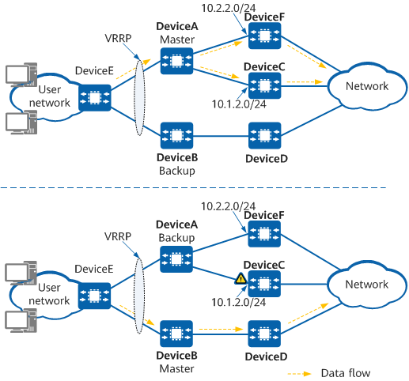

To prevent the loss of service traffic resulting from the withdrawal or deactivation of an uplink IPv4 route, configure a VRRP group to track the uplink route so that a master/backup switchover can be triggered in a timely manner. Note that a VRRP group can track only one VRRP-disabled route. This means that the configuration workload is very heavy if there are many such routes to track. To reduce the configuration workload, you can add multiple VRRP-disabled routes to a route monitoring group, and then enable a VRRP group to track the route monitoring group. When the rate of IPv4 route failures within the route monitoring group reaches a specified threshold, the VRRP group performs a master/backup switchover to ensure reliable service transmission.
A VRRP group can be configured to track a route monitoring group to determine whether the uplink routes are reachable in batches. If the uplink route is withdrawn or becomes inactive after the uplink fails or the network topology changes, hosts on the LAN cannot access the external network through gateways. Then, DeviceA calculates the IPv4 route failure rate within the route monitoring group according to the preset weight. Once the rate of route failures within the route monitoring group reaches the configured fault threshold, the master device in the VRRP group reduces its priority to allow a backup device with a higher priority to preempt the master role. This process ensures uninterrupted communication between the hosts and external network. After the fault on the uplink is rectified, the reduced VRRP priority is restored and the master/backup status is renegotiated.
As shown in Figure 1, a VRRP group is configured on DeviceA and DeviceB. DeviceA is the master and forwards user-to-network traffic, and DeviceB is the backup. On DeviceA, the VRRP group is configured to track the route monitoring group G1. G1 contains routes to 10.1.2.0/24 and 10.2.2.0/24, and the weights of these routes are set to 100. The threshold for the route failure rate is set to 45.
When the uplink of DeviceA fails, the route to 10.1.2.0/24 becomes unreachable, and the failure rate of G1 reaches the threshold configured for VRRP group on DeviceA. As such, DeviceA reduces its VRRP priority so that its new priority is lower than the priority of DeviceB. User traffic is then forwarded to the Layer 3 network through DeviceB, thereby preventing user traffic loss.

The following example illustrates how a route affects the status of a VRRP group when the link goes down and after the link recovers.
The implementation is as follows:
When the faulty link recovers, the 10.1.2.0/24 route in the routing table becomes reachable again. DeviceA then restores its VRRP priority to 120 (80 + 40 = 120), preempts the master role, and sends VRRP Advertisement and gratuitous ARP packets. After DeviceB receives the Advertisement packet carrying a priority higher than its own, it switches to the backup state.
The preceding process shows that by configuring VRRP tracking a route monitoring group, the reachability of uplink routes can be monitored in batches. If the failure rate of routes in the route monitoring group reaches a specified threshold, the VRRP priority is adjusted to trigger a master/backup switchover. This allows uplink traffic to be switched to the original backup device, preventing traffic loss.